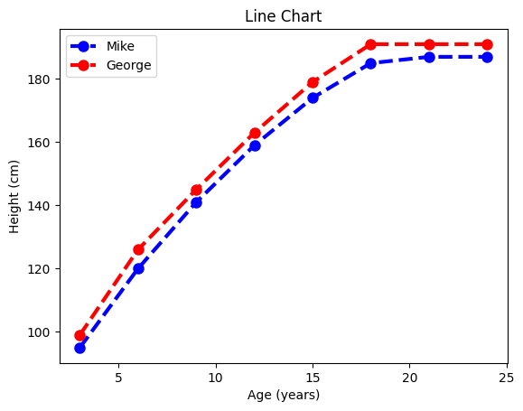
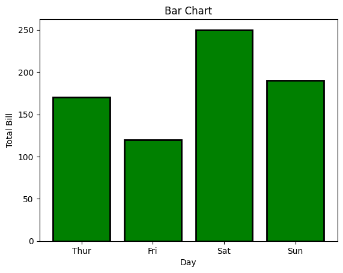
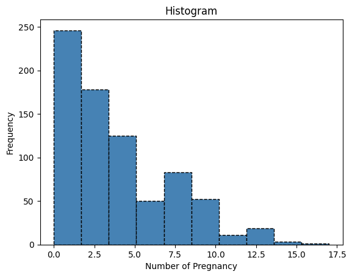
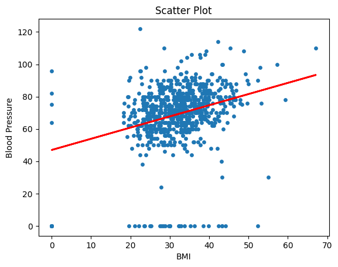
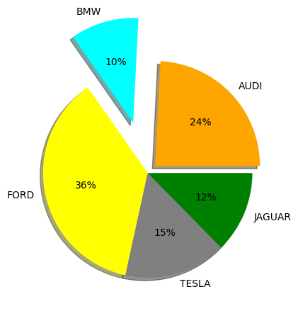

from google.colab import files
uploaded = files.upload()Saving diabetes.csv to diabetes.csv#Parameter: x, y Coordinates for data points
age = [3, 6, 9, 12, 15, 18, 21, 24]
Mike = [95, 120, 141, 159, 174, 185, 187, 187]
George = [99, 126, 145, 163, 179, 191, 191, 191]
plt.plot(age, Mike, color='blue', linewidth=3, marker='o', markersize=8, linestyle='--')
plt.plot(age, George, color='red', linewidth=3, marker='o', markersize=8, linestyle='--')
plt.title("Line Chart")
plt.ylabel('Height (cm)')
plt.xlabel('Age (years)')
plt.legend(labels=('Mike', 'George'))
plt.show()
# This code creates a simple bar chart to show total bills for different days.
# X-axis represents the days and Y-axis shows total bill amount.
x = ['Thur', 'Fri', 'Sat', 'Sun']
y = [170, 120, 250, 190]
plt.bar(x, y, color='green', edgecolor='black', linewidth=2)
plt.title("Bar Chart")
plt.xlabel("Day")
plt.ylabel("Total Bill")
plt.show()
pregnancies = df['Pregnancies']
plt.hist(pregnancies, bins=10, color='steelblue', edgecolor='black',linestyle='--')
plt.title("Histogram")
plt.xlabel("Number of Pregnancy")
plt.ylabel("Frequency")
plt.show()
BMI = df['BMI']
BloodPressure = df['BloodPressure']
plt.scatter(BMI, BloodPressure, s = 15)
plt.title("Scatter Plot")
plt.xlabel("BMI")
plt.ylabel("Blood Pressure")
b, a = np.polyfit(BMI, BloodPressure, 1)
plt.plot(BMI, b*BMI + a, color='red', linewidth=2)
plt.show()
# This code creates a simple pie chart to visualize distribution of different car brands.
# Each slice of pie represents the proportion of cars for each brand in the dataset.
cars = ['AUDI', 'BMW', 'FORD','TESLA', 'JAGUAR',]
data = [23, 10, 35, 15, 12]
explode = [0.1, 0.5, 0, 0, 0]
colors = ( "orange", "cyan", "yellow","grey", "green")
plt.pie(data, labels=cars, explode=explode, colors=colors, autopct='%d%%', shadow = True)
#plt.title("Pie Chart")
plt.show()